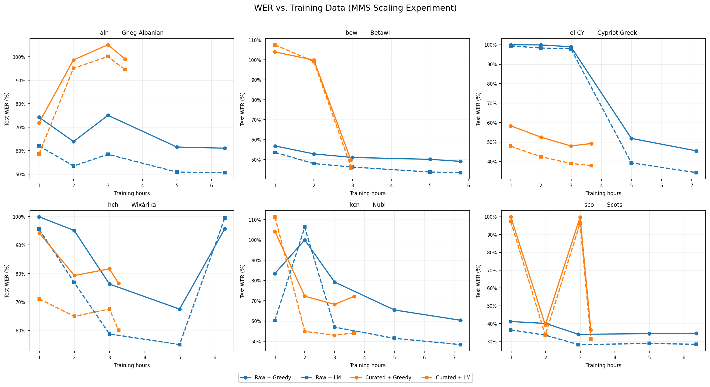
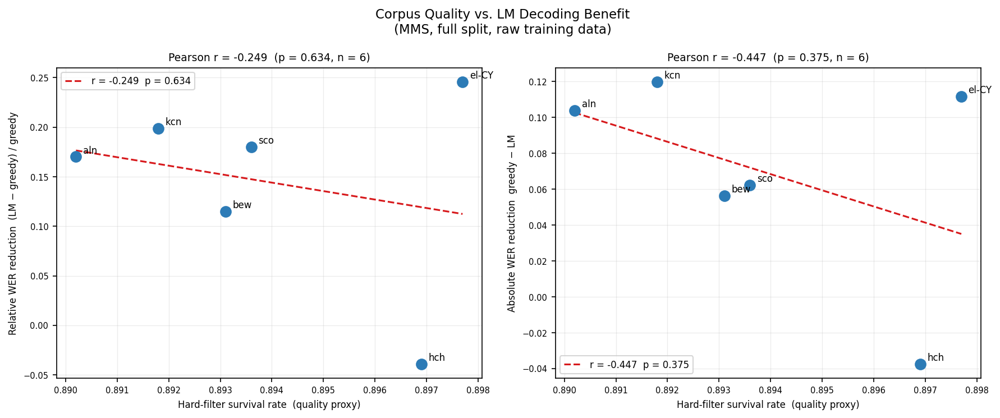

My ACL 2026 paper introduced a framework for modeling linguistic diversity in spontaneous speech for low-resource languages. One thread I didn't get to fully explore in the paper is what happens when you change how much and how clean your data is. This post covers those follow-up experiments.
The short version: data quality matters more than data quantity at these scales, and the signal shows up clearly and consistently across all six languages I tested.
The experiments run on six indigenous languages with varying amounts of transcribed speech, ranging from a few hours to roughly 30 hours of audio. All experiments use MMS (Meta's Massively Multilingual Speech model) as the backbone, fine-tuned per language. I compare three data conditions:
For decoding, I use a word-level KenLM 4-gram ARPA built on the full raw training split — held constant across all conditions so that any WER differences are attributable to the acoustic model alone, not the language model.
The first question is straightforward: across different training set sizes, does curation help?

Figure 1. WER vs. training hours (MMS fine-tuned) for raw and curated data splits, aggregated across 6 languages. Curated data consistently yields lower WER at every budget.
The scaling curves tell a clear story. Across all six languages, the curated split consistently outperforms the raw split at every training budget. The gap is largest in the low-data regime — which is exactly where we care most. When you only have a couple of hours of audio, the noise floor on raw crowdsourced or scraped data is high enough that it actively hurts training.
The practical implication is that for low-resource ASR, you're almost always better off training on 54% of well-curated data than 100% of noisy data. This is a fairly strong result for data ablations at this scale.
The second experiment asks a more subtle question: can you predict how much a language model will help at inference time, just by looking at the quality of your training data?

Figure 2. Mean training-set KenLM perplexity (x-axis) vs. absolute WER improvement from LM decoding (y-axis). Each point is one language. Higher perplexity training sets see larger LM gains.
The Pearson correlation between mean training-set KenLM perplexity and absolute LM WER improvement is strong and positive across all six languages. Languages whose training data is noisier (higher perplexity) benefit more from LM decoding at inference — which makes sense, but is nice to see quantified.
What this means practically: KenLM perplexity on your training set is a cheap proxy for data quality, and it tells you in advance how much headroom you have for LM rescoring gains. If your training perplexity is already low (clean data), the LM won't move the needle much because the acoustic model already learned clean speech patterns. If it's high (noisy data), an LM can compensate — but you'd be better off cleaning the data in the first place.
The broader takeaway for low-resource speech modeling is that data curation is a first-class lever, not an afterthought. A two-stage pipeline — hard filters for obvious garbage, then soft ranking via a language model perplexity score — is lightweight to implement and pays off consistently.
A few things I'd flag for practitioners:
A few directions I'm curious about: whether cross-lingual perplexity models (trained on a related higher-resource language) can stand in for per-language KenLM models in truly zero-resource settings, and whether these curation findings hold for encoder-decoder models like Whisper. Both feel tractable and I'm hoping to run those experiments soon.
The ACL paper has more details on the language selection, model configuration, and main results table — happy to share on request.